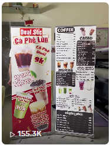

Video TikTok tập trung vào sản phẩm in ấn thực tế, sử dụng hook thu hút ngay những giây đầu tiên, giúp tăng khả năng giữ chân người xem và đạt hơn 155.000 lượt xem tự nhiên.
Xác định chủ đề có khả năng thu hút người xem.
Tạo điểm nhấn trong 3 giây đầu tiên.
Tập trung sản phẩm thực tế và trải nghiệm khách hàng.
Hashtag, caption và thời gian đăng tải phù hợp.